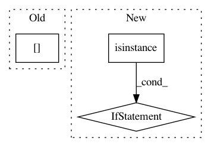

d1e6e624ef891543c5bba32bb0a696d350714693,coremltools/converters/nnssa/coreml/ssa_converter.py,SSAConverter,_convert_expand_dims,#SSAConverter#Any#,1116
Before Change
if len(input_names) == 2 and g[node.inputs[1]].attr["value"].val is None:
raise NotImplementedError("[SSAConverter] Cannot handle dynamic expandDims")
axes = g[node.inputs[1]].attr["value"].val
layer = self._get_builder().add_expand_dims(
name=node.name, input_name=input_names[0], output_name=node.name, axes=axes)
shapes.propagate_single_layer(layer, self.tensor_shapes)
After Change
raise NotImplementedError("[SSAConverter] Cannot handle dynamic expandDims")
axes = input_nodes[1].value.val
axes = list(axes) if isinstance(axes, Iterable) else [axes]
layer = self._get_builder().add_expand_dims(
name=node.name, input_name=input_names[0], output_name=node.name, axes=axes)
shapes.propagate_single_layer(layer, self.tensor_shapes)
In pattern: SUPERPATTERN
Frequency: 3
Non-data size: 3
Instances
Project Name: apple/coremltools
Commit Name: d1e6e624ef891543c5bba32bb0a696d350714693
Time: 2019-08-20
Author: smq@apple.com
File Name: coremltools/converters/nnssa/coreml/ssa_converter.py
Class Name: SSAConverter
Method Name: _convert_expand_dims
Project Name: apple/coremltools
Commit Name: d1e6e624ef891543c5bba32bb0a696d350714693
Time: 2019-08-20
Author: smq@apple.com
File Name: coremltools/converters/nnssa/coreml/ssa_converter.py
Class Name: SSAConverter
Method Name: _convert_reduction
Project Name: apple/coremltools
Commit Name: ffbc7c36a93101b8fb4612a51d28ef38f8f29c7f
Time: 2017-08-19
Author: shuoxin_lin@apple.com
File Name: coremltools/converters/keras/_layers2.py
Class Name:
Method Name: convert_convolution